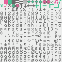

TECHNICAL
This page is waaaaaaaaaaaay out of date as of Oct 2018 and that's not about to change in the next six seconds but you might be looking for The Speedrunning FAQ/Glossary. May all your splits be gold!
I am 0xabad1dea (the hex is silent), a professional application security researcher and Best Song Pwnie 2014 winner (this is the important one) professionally known as Melissa Elliott. If my name breaks your website we have a personal problem. My long-term goal is to convince programmers that the security of everything from the global economy all the way up to online Pokémon battles is in their hands and they need to take that responsibility seriously. My primary means of interacting with the community is through my extremely active Twitter account.
BEFORE YOU CONTACT ME:
Skip to the stuff in ALL CAPS for the #1 reason I block people!
I am genuinely flattered every time someone considers me for a conference, an interview, etc, but my health
is very fragile both in physical terms and in the emotional drain that comes from living with
permanent problems. I am literally disabled right now for reasons that do not fit in the margin of this page.
Therefore:
I cannot come to your conference. Sorry :(
I will not talk to you on the phone. Sorry :(
I might stress out and not respond to sensible inquiries. Sorry :(
I'm most likely to respond to direct questions asked directly on Twitter. Sometimes I have to get things
cleared with corporate PR. I cannot do anything related to business right now because of my health.
Quoting my "top level" tweets without permission is okay (please do not quote
discussions with my friends without checking) but I do appreciate being told when I'm in a news article.
Please do not ask me out. Please do not ask me to follow for DM when I have no earthly idea who you are. I do not DM with strangers.
Please do not retweet-beg or follow-beg. Please do not invite me to give up my time for my projects to work on yours.
Please keep in mind that a few hundred different people might say something to me on any given day. I
think most of you are pretty neat but I might forget who you are and/or be wary because sometimes creeps
come around and I really really don't want to deal with creeps.
On the rare occasion that I do physically show up for an event, it is okay to say hello! Just don't be
that one guy who cornered me alone and aggressively repeatedly asked for my phone number! It's really
easy to not be that one guy.
IF YOU TELL ME TO TRY A DIFFERENT OPERATING SYSTEM [WORD PROCESSOR, MEDIA PLAYER, AD BLOCKER, WHATEVER] THAN THE ONE I AM CURRENTLY USING I WILL HATE YOU UNTIL THE END OF THE EARTH.
I KNOW ABOUT LINUX. I KNOW ABOUT OSX. I KNOW ABOUT WINDOWS. I KNOW ABOUT WHATEVER ELSE YOU'RE ABOUT TO MENTION. FOR. MUCKING. SAKE. B L O C K E D.
I know that's a lot! But I've somehow come into the odd position of being an introvert with, like,
eighteen thousand friends. You gotta manage it on some level.
Nothing motivates me as much as spite. Do not send me your privacy product pitch or your patented cryptography. The pink and ✧sparkles✧ are nothing but a protective veil over the spinning power core of my bitter hatred. I have literally destroyed entire companies and products with nothing but the power of my spite and you ignore this warning at your great peril.
Public Research
I presented at DEF CON 21 (2013) with an introduction to unintentional radio emissions produced by electronics and how to get started measuring and observing them with ten dollars of equipment. Video - Slides
My conclusions in broad terms are that we should include auditing the emissions of our devices as part of our protections against sufficiently advanced adversaries of various sorts.
I realize I look like a total dork. The stage crew opined that I was too short for the podium and the block they gave me to stand on induced the opposite problem. It was my first big presentation and I can't bear to watch it.
Commercial Research
I work on/with/in the binary static analysis engine at Veracode. It's basically cheating at the halting problem as a career. I see bad code every day that could kill a bear from twenty paces. Trivial buffer overflows from the network. Executing the contents of $_GET. Currency stored in floats. XSS and SQLi by the millions. My frequent commentary on security engineering is informed by seeing literally thousands of distinct programs written by many different companies and organizations and the bugs therein.
Hating PHP As A Service
I write an entire blog based around my ongoing hate affair with PHP. It's very vitriolic. Surely you don't want any of that.
Articles
Sometimes I write stuff for edutainment.
Do Not Pass QA, Do Not Goto Fail A review of how not to ship this bug.
Executable Archaeology - The Case Of The Stupid Thing Eating All My RAM My all-time second most popular article, exploring how a simple debug feature shipped in production tanked my machine.
Analyzing Binaries With Hopper's Decompiler is starting to age due to Hopper still being under active development.
Is the Vibe messaging app safe for protestors? This is that spite-driven research I warned you about.
Our Enemy The Optimizer an introductory look at the unspeakable horrors visited on your source code by the unfeeling machine.
How Sally Got Owned a hand-illustrated explanation of how techniques used by mobile game pirates open your device to being hacked.
Privacy Is Hard, Let's Go Shopping A beta feature in Ubuntu opens up users to serious privacy breaches.
That time I had to use a VAX
Several years ago as a student I had a shell on a real, actual VAX, and discovered a critical shortage of documentation on the internet. I actually resorted to rescuing the user manual from my university library's back room to find the information I needed. What I learned is distilled in this textfile for assembly programming the machine, which I have left totally unedited from its (embarrassing) original form: VAXHAX
Formal Credentials
I have a bachelor's degree in computer science from a small private university. Far more impressive is my twenty four thousand reddit comment karma, don't you think?
And as an aside
Like everyone in infosec, I have a few haters. Some have gone so far as to forge texts in my name. Please apply common sense in determining whether I would post my real-world mailing address to full-disclosure for no apparent reason. (Also, any further hatemail directed to that address will reach strangers.)
If I ever lose control of my Twitter account, I will authenticate the new one, or prove my having recovered the old one, by decoding the hash 96a21b9d18e011bfc960e55d31f1695411013d83aaadb9b699bb2d845fa2c627 (tweet) which is also now here in the git history.
CREATIVE
Listen. None of that stuff on the left is important. Hacking, radio waves, whatever. I WROTE A NOVEL. It's called Glory in the Thunder and it's actually just the first volume of a story I have been working on for years. It's gaslamp fantasy which is sort of like steampunk. ↬You should buy it.↫ It's really cheap FREE and it's my life's work.
New!: Glorytales game music repository
I am a professionally published video game journalist! Mysteriously, not a single gator who's gated at me has brought this up! My incredibly pretentious essay on Twitch Plays Pokemon is also popular!
It's true, my SSL Smiley Song did win Best Song at the 2014 Pwnie Awards! Here is the original vocals and here is the authentic NES cart animated version.
I fancy myself a chiptune composer but in truth I'm only kinda sorta competent at music. (Happy to report I've improved since I wrote that years ago!) As far as chiptunes go, I work in 2A03 (the 6502-based chip inside the original Nintendo) with no expansions using the PP-MCK text-based compiler. I also do more "normal"-sounding music with orchestra soundfonts. It's basically all just theme-music for my own novel characters though. It all goes on my soundcloud. I'm not really involved with the chip scene. Some people there have been encouraging but I encountered hostility towards beginners one too many times and bailed.
That being said, I will totally call you out if you call anything vaguely chip-sounding or pixelated-looking "eight-bit" without reference to a real eight-bit computing platform. There's nothing wrong with these retro-inspired works of art, but oftentimes "eight-bit" is a wildly misapplied label. Since I actually program in assembly on 8 and 16-bit platforms I'm kinda picky about this.
My NES Font
A long time ago I wrote a simple text editor program for Famicom (NES) with the obscure keyboard peripheral. (The typing keyboard, not the piano one - which I actually own!) I couldn't find anyone with an actual keyboard to test it with so I had to rely on some rudimentary support in an emulator and hope it was right. However I ended up doing a complete font for it with ANSI extended characters and some people asked to reuse it. You may use it for whatever with attribution. You can grab the PNG or the NES rom file editable with YY-CHR.

That trivial demo I'm still proud of
An IRC channel called #io had a contest to do a boot sector demo, the only real rule was it had to feature their name. I came up with this really weird/cool infinite melting effect. Binary - Source (with instructions) - Video
My Avatar
The pink girl in my Twitter avatar is called Kasane Teto. She is essentially a parody of Hatsune Miku, the Japanese "pop star" character developed to market voice synthesis. The artwork I use originates here. (It will bring you to the artist's profile rather than directly to the artwork unless you have signed in.) Contrary to widespread rumor, my favorite color is actually orange.
Things I Like
I like Dwarf Fortress, an absurdly complex simulation game for all three major desktop operating systems. I donate once a year to encourage the madman behind it.
I like to shamelessly advocate for action adventure comic Drowtales.
I like human rights. I advocate for feminism (and get really sad at people who think feminism is some sort of kill-all-menism), orientation rights, gender identity rights, freedom of/from religion, etc. I am anti-mass-surveillance and do not draw an ethical distinction between my fellow American citizens and the ~94% of human beings who are not my fellow American citizens.
I like Dutch. I can more or less read it. Just don't ask me to write it!
Last updated January 18th 2016